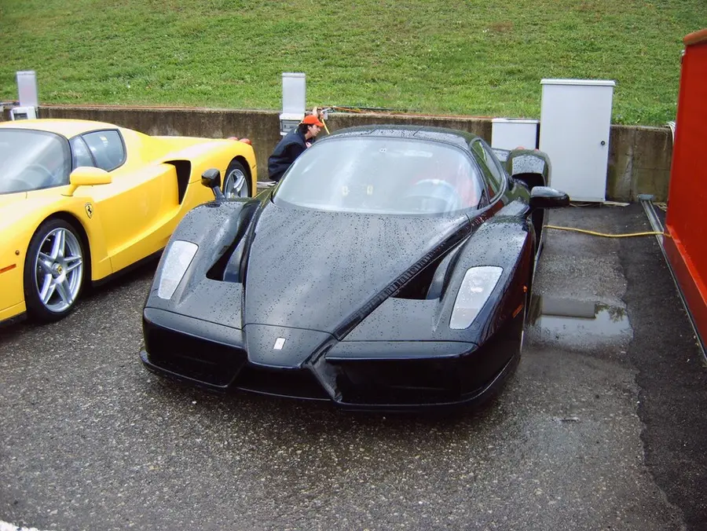
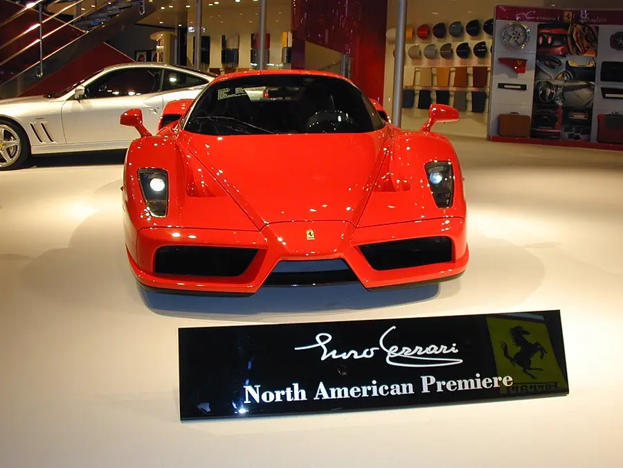

페라리 엔초 Ferrari Enzo
페라리 엔초(Ferrari Enzo)는 이탈리아의 자동차 제조사 페라리가 제작한 미드엔진 스포츠카이다. 회사 설립자 엔초 페라리의 이름을 따서 공식 명칭을 정했으며 타입은 F140이다.
최종 업데이트
페라리 엔초는 어떤 브랜드인가
페라리 엔초는 이탈리아의 자동차 제조사 페라리가 만든 미드엔진 후륜구동 스포츠카이다. 탄소 섬유 차체, 포뮬러 원 방식의 자동화 수동 변속기, 탄소 섬유 강화 실리콘 카바이드 세라믹 복합 디스크 브레이크 등 포뮬러 원 기술을 사용해 2002년에 개발되었다.
능동형 공기역학처럼 포뮬러 원에서 허용되지 않는 기술도 적용되었다. 6.0L 자연 흡기 V12 엔진은 7,800 rpm에서 660 PS의 출력을 내며, 최고 속도는 355 km/h까지 기록되었다.
2004년 미국 잡지 스포츠카 인터내셔널은 이 차를 2000년대 최고의 스포츠카 목록 3위로 선정했다. 한편 지난 50년간 가장 못생긴 자동차 50선 중 하나로 묘사되기도 했다.
페라리 엔초는 어떻게 시작되고 성장했나
엔초는 당시 피닌파리나의 디자인 책임자였던 켄 오쿠야마가 디자인했다. 2002년 파리 모터쇼에서 399대 한정 생산으로 처음 발표되었으며, 페라리는 기존 고객들, 특히 이전에 F40과 F50을 구매했던 고객들에게 초대장을 보냈다.
2004년에 400번째 생산 차량이 제작되어 자선을 위해 바티칸에 기부되었고, 이후 소더비스 경매에서 110만 달러에 판매되었다. 총 498대가 제작되었으며, 개발 과정에서는 페라리 348의 차체를 사용한 테스트뮬 M1, M2, M3 세 대가 만들어졌다.
세 번째 뮬은 2005년 6월 400번째 엔초와 함께 경매에 부쳐져 195,500유로에 낙찰되었다.
페라리 엔초의 브랜드 아이덴티티는 무엇인가
페라리 엔초의 대표 제품과 서비스는 무엇인가
사진으로 보는 페라리 엔초의 역사


자주 묻는 질문
페라리 엔초는 어느 나라 브랜드인가요?
페라리 엔초는 이탈리아의 모빌리티 브랜드입니다.
페라리 엔초의 브랜드 아이덴티티는 무엇인가요?
페라리 설립자의 이름을 공식 명칭으로 삼고 포뮬러 원 기술을 적용한 한정 생산 미드엔진 스포츠카이며, FXX와 마세라티 MC12의 바탕이 된 모델이다.
페라리 엔초의 대표 제품은 무엇인가요?
엔초는 페라리의 F140B 자연 흡기 65° V12 엔진을 얹었으며, 배기량 5,998.80 cc에서 660 PS의 출력과 657 N⋅m의 토크를 낸다.
출처와 검증
페라리 엔초 관련 참고: 위키데이터 Q269880 · 한국어 위키백과 · 영어 위키백과. 브랜드명은 한글과 원어를 함께 표기하되 데이터에 없는 표기는 만들지 않습니다. 기원 국가·설립연도는 검수된 정의문에서 확인된 값을 우선하고, 없을 때만 공식 웹사이트 URL이 일치하는 위키데이터 개체의 값을 씁니다. 위키데이터 값은 2026-11-12 기준입니다.